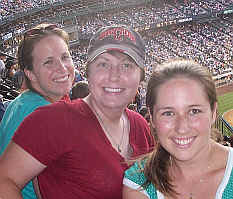
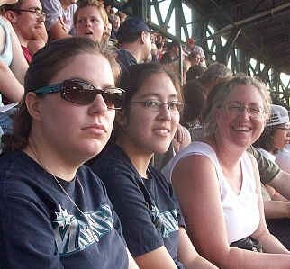
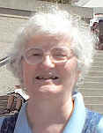

Young Adults Group at Christ Episcopal Church
Young Parents, Couples, Singles… If you are a young adult, ages 18-35, and would like a group that talks about politics, saints & sinners, bible study, movies, and theology, then plan to join us. Look for the Christ Episcopal Church Young Adults group on Facebook. Questions? Contact the parish office at office@christchurchseattle.org, or 206-633-1611.
We have experienced one of the realities of young adult ministry; young adults often have to move to pursue academic and/or career opportunities. This past year, we have had to say goodbye to many of our Monday Night regulars. While we are sorry to see people leave, we celebrate their achievements and our prayers go with them. I think we have a lot to celebrate in this particular program that served a great group of young adults for three years. And now it’s time to move on to other ways of doing young adult ministry.
The Monday Night gathering has been discontinued for the time being.
We have formed an action-reflection group. We will read current literature about the church and our culture today and then come together to discuss pertinent topics and brainstorm ideas of how to reach out to young adults in our neighborhood. We will choose projects to pursue and then come back to reflect on them. The hope is to actively involve more Christ Church parishioners in young adult ministry, engaging and interacting with young adults in our neighborhood so that this ministry will continue as part of our identity long into the future.
- 
- 
Staff
- 
- Interim Pastor, The Rev. Rachel F. Endicott
- Organist and Music Director, Nancy Kern
- Parish Administrative Secretary, Marjorie Jodoin
2012 Vestry
- Ben Gould, Rector's Warden
- Willy Donaldson, People's Warden
- Daniel Burkhalter
- Ellen Ewald
- Pat Hyland
- Paul Osborne
- Don Ostrow
- Don Swisher
- Jay Zeman
Delegates to Convention
- Frank Prohaska
- Eric Dodsley
- Liz Osborne
- Joan Burton
Alternates
- Todd Voelker
- Julie Coryell